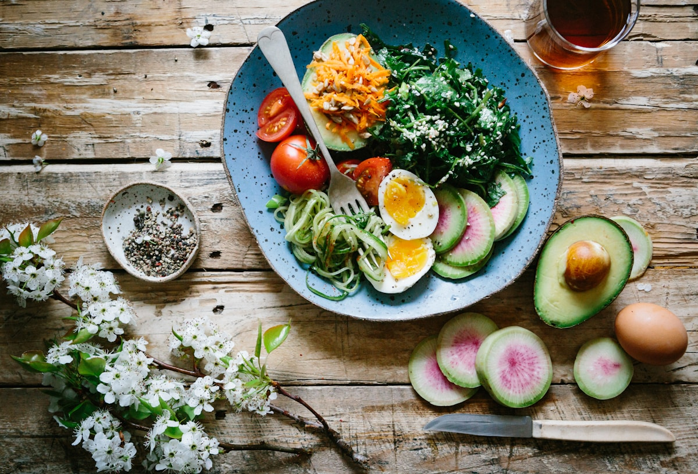
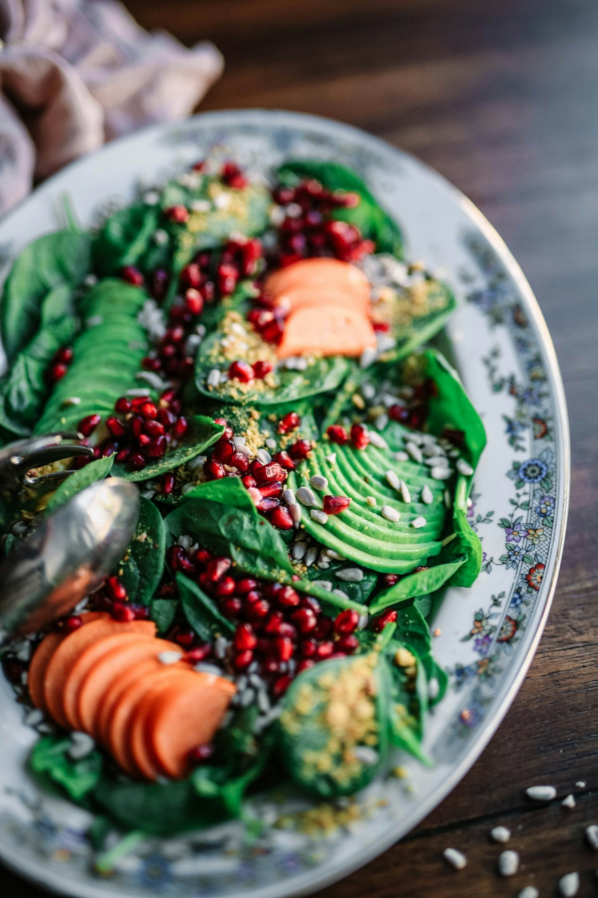

Presencial · 50 min
Primera consulta nutricional
Evaluación inicial: anamnesis, antropometría completa y diseño del primer plan alimenticio.
$35.000
TEMUCO · NUTRICIÓN Y BIENESTAR DESDE 2016
Clínica de nutrición · Temuco
CONSULTAS Y PLANES
Conoce las opciones del catálogo y revisa qué incluye cada atención.
Catálogo de demostración. Los precios y las duraciones son referenciales.

Presencial · 50 min
Evaluación inicial: anamnesis, antropometría completa y diseño del primer plan alimenticio.
$35.000
Presencial · 30 min
Seguimiento mensual: medición de indicadores y ajuste del plan vigente.
$25.000
Presencial · 30 min
Seguimiento intensivo cada 15 días. Recomendado en los primeros 2 meses.
$22.000
Online (video) · 30 min
Consulta de seguimiento vía videollamada. Requiere contar con consulta presencial previa.
$20.000
Presencial · 30 min
Para pacientes que requieren atención fuera de su control habitual.
$28.000

Presencial · 1 mes
Incluye primera consulta + 1 control quincenal + plan alimenticio personalizado + seguimiento por WhatsApp.
$65.000
Presencial · 3 meses
Incluye primera consulta + 5 controles + 3 planes mensuales + seguimiento continuo.
$170.000
Presencial · 1 mes
Para deportistas y personas con actividad física frecuente. Cálculo de requerimientos energéticos y proteicos.
$70.000
Presencial · Duración no especificada
Plan adaptado para patologías metabólicas. Coordinación con médico tratante si aplica.
$75.000
Presencial · Duración no especificada
Diseñado para garantizar aporte adecuado de proteínas, hierro, vitamina B12 y calcio sin productos animales.
$68.000
Presencial · Duración no especificada
Evaluación nutricional pediátrica y diseño de plan adaptado a la etapa de desarrollo del niño.
$65.000